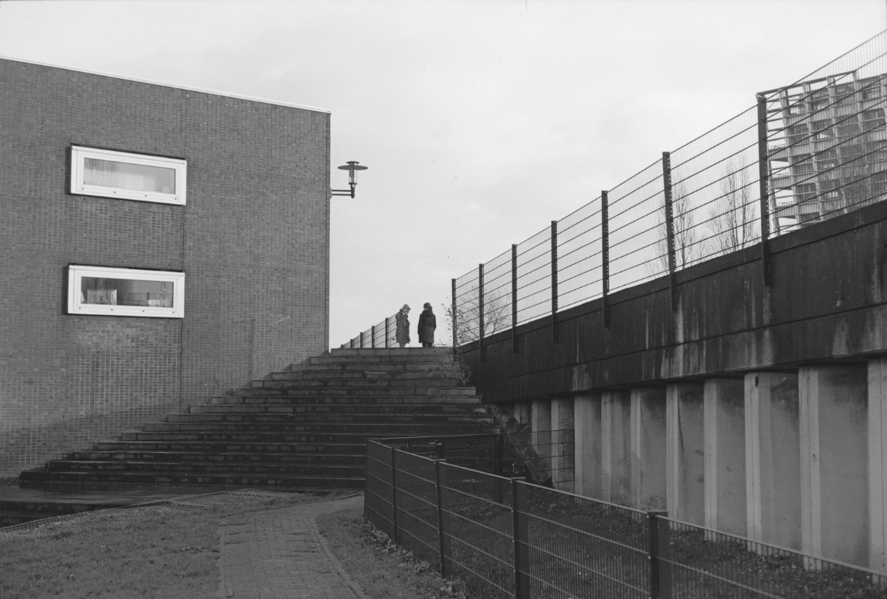

4×5 大画幅等来了新页片，柯达这批最便宜的不到 4 美元一张
2026 年 9 月 28 日，摄影师 Kyle McDougall 发了一条试拍视频：Harman 把 Kentmere 400 和 Phoenix 2 的 4×5 试验页片寄给他，让他试拍并给反馈——因为这两卷各有一个短板，可能让它们永远做不成大画幅页片。视频本身没有明说那个短板是什么。 而同一时间，北美货架上的 4×5 已经有货了，而且比很多人以为的便宜：柯达改名之后的 EktaPan 100 / 400 已经在卖，每张不到 4 美元。 这篇就把三件事分清楚：官方在产的／刚公布的／只存在于测试里的，然后把 4×5 的价格换成同一个单位来比。
| 这一件事 | 能确认到什么程度 | 依据 |
|---|---|---|
| Kentmere 400 / Phoenix 2 的 4×5 | Harman 寄出试验页片给摄影师试拍并收集反馈；尚未量产、也未见上市（截至 2026-10-04） | ✅ 测试者本人视频（2026-09-28） |
| 两卷为什么一直没做成页片 | 测试者原话是「各有一个短板，可能让它们永远做不成大画幅页片」，未说明短板是什么 | ⚠️ 第三方视频口径，官方未解释 |
| 页片为什么不是「把卷片裁开」 | 页片片基厚度与卷片不同——要保证乳剂稳定、贴合焦平面、好装好冲；正因如此，不是每一种乳剂都能走到大画幅 | ⚠️ 媒体（Fstoppers 2026-05-08） |
| Pan F Plus 的 4×5 / 8×10 | 2026-05-07 官方发布，是这卷第一次有页片规格 | ✅ 官方＋多家媒体同日报道 |
| 柯达改名后的页片 | EktaPan 100 / 400（原 T-Max）、EktaColor Pro 160 / 400（原 Portra） 等已在北美零售上架 | ⚠️ 零售商货架实采，非厂商公告 |
| SFX 200 的页片 | 没有页片规格（红外向的这卷只做到 120） | ⚠️ 论坛与技术资料一致 |
| XP2 Super 的页片 | 未找到在产 4×5 的消息 | ❌ 未找到 |
一、先讲清一件事：页片不是「把卷片裁开」
很多人以为大画幅页片就是把 120 的卷子裁成一张一张。不是。 页片的片基要比卷片厚——薄片基在片夹里会拱、会贴不平，插进片盒时容易划伤，冲的时候也难夹住。所以一种乳剂要走到大画幅，得为它换一套片基、重走一遍涂布线。 ⭐ 这句话就是今年两件事的钥匙：伊利福 2026 年才第一次把 Pan F Plus 做成 4×5 和 8×10（5 月 7 日官方发布），而 Kentmere 400 与 Phoenix 2 到现在还停在「试验页片」阶段。同一家厂、同一批人，差别就在这一步。
二、官方在产的：Pan F Plus 是今年唯一的新面孔
2026 年 5 月 7 日，Harman 宣布 ILFORD PAN F PLUS（ISO 50）新增 4×5 与 8×10 页片——这是这卷 1960 年代出身的经典中速卷，第一次有大画幅规格。 它补上的是这个位置：伊尔福原来的页片线里，最慢只到 FP4 Plus（ISO 125）。Pan F Plus 一来，慢速档就补齐了——对拍静物、建筑、需要长曝光的题材，ISO 50 意味着可以在白天用更慢的快门，或者更放心地收小光圈。

三、只存在于测试里的：Kentmere 400 与 Phoenix 2
这是本篇最值得记住的一段，因为它不是新品发布，而是「可能不会发布」。 9 月 28 日那条试拍视频里，测试者明确说：两卷都是 Harman 寄来试拍、并要求反馈的；原因是他原话里的「这两卷各有一个短板，可能让它们永远做不成大画幅页片」。他随后补了一句「结果让我挺惊喜」。 ⚠️ 三条边界必须写清楚： ① 短板到底是什么，他没有说，官方也没有解释——所以任何「因为 XX 所以做不了」的说法，都是别人的推断； ② 寄样试拍 ≠ 即将上市（伊利福自家就有反例：Pan F Plus 从测试到官方发布走了完整流程）； ③ 视频有 3.9 万次播放，但播放量不是量产计划。
⭐ 那为什么大家都在等 Kentmere 400 的页片？因为它是伊尔福系里最便宜的一档——同门的 HP5 Plus 在北美零售约 $79.95 / 25 张（≈$3.2 一张），而 Kentmere 400 在 135 上的价格大约只有 HP5 Plus 的六成。真要出页片，它会是目前最便宜的正经黑白页片之一。这大概也是「试拍」这条消息能传开的原因。

四、价格别按「一盒」比，按面积比
| 规格 | 北美零售挂牌价 | 每张 | 折成每 100cm² |
|---|---|---|---|
| 伊尔福 HP5 Plus · 4×5 · 25 张 | $79.95 | ≈$3.20 | ≈$4.4 |
| 伊尔福 Pan F Plus · 4×5 · 25 张 | $70.99 | ≈$2.84 | ≈$3.9 |
| 伊尔福 Delta 100 · 4×5 · 25 张 | $69.99 | ≈$2.80 | ≈$3.9 |
| 伊尔福 FP4 Plus · 4×5 · 25 张 | $66.99 | ≈$2.68 | ≈$3.7 |
| 伊尔福 Ortho Plus · 4×5 · 25 张 | $65.99 | ≈$2.64 | ≈$3.6 |
| 柯达 EktaPan 100（原 T-Max 100）· 4×5 · 10 张 | $39.99 | ≈$4.00 | ≈$5.5 |
| 柯达 EktaPan 400（原 T-Max 400）· 4×5 · 10 张 | 见零售页 | — | — |
| 柯达 EktaColor Pro 160（原 Portra 160）· 4×5 · 10 张 | $60.99 | ≈$6.10 | ≈$8.4 |
| 柯达 EktaColor Pro 400（原 Portra 400）· 4×5 · 10 张 | $79.99 | ≈$8.00 | ≈$11.0 |
⭐ 这张表有两个反直觉的地方： 第一，柯达的黑白页片反而比伊尔福贵——EktaPan 100 每张 $4.00，而伊尔福最便宜的 Ortho Plus 每张 $2.64。 第二，真正贵的是彩色：EktaColor Pro 400 每张 $8.00，是黑白页片的近三倍——这就是为什么「Phoenix 2 能不能做成页片」这件事值得等：大画幅彩色现在几乎没有便宜选项。 ⚠️ 口径说明：以上都是北美零售挂牌价（美元、含税前的页面标价），不是中国大陆渠道价；4×5 页片在国内的现货与报价请以店家实时为准。表里所有「每 100cm²」都按整张 4×5 的可用面积 100.8cm²折算（$81.0 规格的四边按 101.6×127mm 算），这是本站自算的换算，不是厂商口径。
五、按你的情况怎么选
六、一句话
页片不是把卷片裁开——所以「测试片寄到摄影师手里」和「你明天能买到」之间，隔着的不是时间，是一整套片基。
数据口径
Kentmere 400 与 Phoenix 2 的 4×5 试验页片出自测试者 2026-09-28 的公开视频（标题《Phoenix 2 and Kentmere 400... in 4x5 Large Format?》，截至本文写就约 3.9 万次播放）；该视频只说明「寄来试拍、要反馈」与原话「各有一个短板，可能让它们永远做不成大画幅页片」，未说明短板内容 → 本篇标注为 ⚠️ 第三方口径，不做推断。 Pan F Plus 的 4×5 / 8×10 发布：✅ 2026-05-07 官方消息，The Phoblographer 等媒体同日报道。 页片片基与卷片不同、并非所有乳剂都能做页片：⚠️ 媒体口径（Fstoppers，2026-05-08）。 北美零售价：⚠️ 来自零售商公开标价页（Film Photography Project Store 的 4×5 页片区，2026-10-04 抓取）；柯达 EktaPan 400 页面未标出可直接引用的价格，故留空。柯达改名 EktaPan / EktaColor Pro 的背景见本站《[柯达的胶卷涨疯了也想多卖](journal/kodak-yingguo-jiangjia-ektapan)》一文。 「每 100cm²」为本站按整张面积折算的自算值，不是厂商或零售商口径；美元金额未做汇率换算。 ⚠️ 本文三张配图是同款乳剂在较小画幅上的实拍样片（站点样片库均标注原作者），不是 4×5 页片实拍——用来对照乳剂观感，不能当作页片画质样本。 本站 2026-10-04 已同步修正胶卷库的规格字段：Pan F Plus 补上 4×5 / 8×10，Kentmere 100 / 400 补上 4×5。
这几卷库里都有独立档案页
T-Max 100（4×5 在产 · 135 参考价约 ¥90–110） Tri-X 400（4×5 在产 · 135 参考价约 ¥85–105） HP5 Plus（伊尔福的 400 度主力 · 135 参考价约 ¥70–90） FP4 Plus（页片老牌中速 · 135 参考价约 ¥70–90） Pan F Plus（2026-05 才有页片 · 135 参考价约 ¥85–105） Kentmere 400（页片还在试 · 135 参考价约 ¥45–60）
去胶卷库看看这几卷
「胶卷档案」是一个可搜索的胶卷资料库：每卷都有规格、特性、使用感受、参考价与实拍样片。搜品牌或型号就能直达。